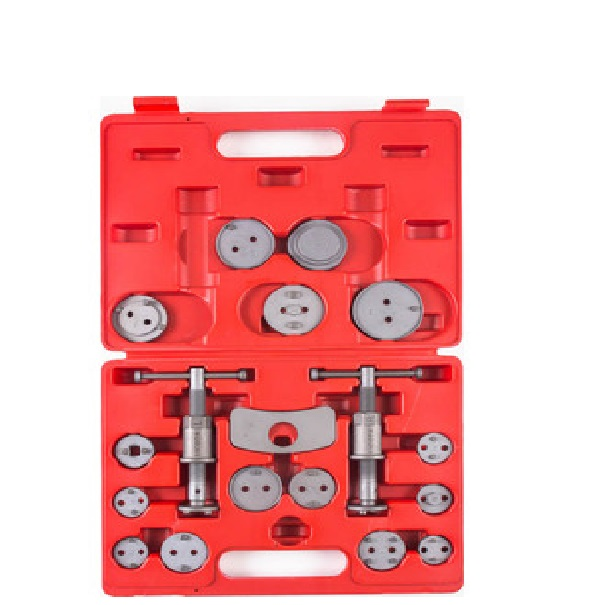

Описание товара
Набор приспособлений служит для утапливания поршней тормозного цилиндра
на плавающих скобах передних или задних суппортов со стопорным приспособлением
стояночной тормозной системы (правое вращение). В набор входят приспособление
для сжатия суппортов с левым вращением.

Применимость элементов набора
- Alfa Romeo;
- Audi;
- BMW;
- Citroen;
- Fiat;
- Ford;
- GM;
- Honda;
- Jaguar;
- Lancia;
- Lincoln;
- Mazda;
- Mini;
- Mitsubishi;
- Nissan;
- Opel;
- Peugeot;
- Proton;
- Renault;
- Rover;
- Saab;
- Seat;
- Subaru;
- Toyota;
- Vauxhall;
- VW;
- Volvo.
Подробное описание товара
- Используется для замены тормозных колодок.
- Подходит для большинства автомобилей.
- В комплекте винты с правой и левой резьбой.
Способ применения:
Набор используется для утапливания и одновременного вкручивания поршня
тормозных цилиндров в суппорт. Позволяет развести поршни без повреждений
резиновых уплотнителей. Вращая рукоять приспособления, задвинуть поршень
тормозного цилиндра для замены тормозных колодок.
Комплектация товара
Состав набора
| № п/п |
Наименование |
Кол-во, шт. |
| Всего предметов: |
19 |
| 1 |
Адаптеры с прав. и лев. резьбой |
16 |
| 2 |
Приводы с прав. и лев. резьбой |
2 |
| 3 |
Кейс пластиковый |
1 |
- Ширина, м: 0.2
- Высота, м: 0.07
- Длина, м: 0.35
- Вес, кг: 1.85
Для того, чтобы вернуться в каталог, нажмите здесь